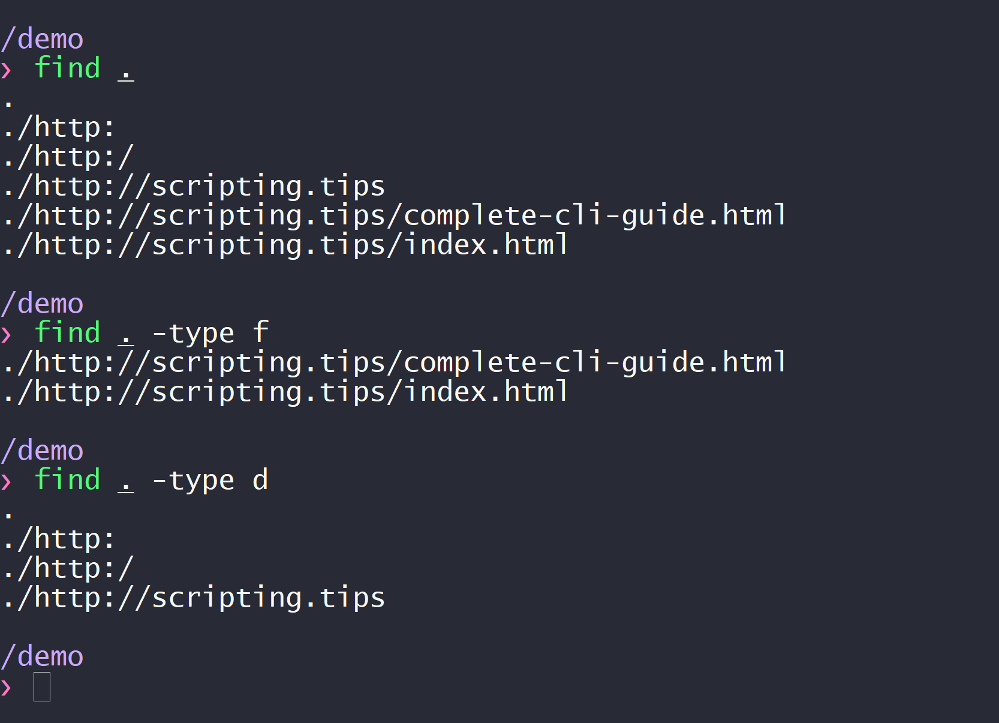

A command-line call is usually composed of the program name followed by a list of arguments. For instance, on linux the command find . will display a listing of all the files and folders in the current directory and its subdirectories. But if your pass the argument -type f, it will only display files and if you pass the argument -type d it will only display directories. This is illustrated on the screenshot below:  The set of arguments that you can pass to a program constitutes its Command-Line Interface (CLI). In this article, I will explain how to create a command-line interface for your python scripts. The argument vector Before writing a command-line program, it's important to understand how the operating system calls your program. On Linux systems, all command-line programs are given an argument vector at launch time that contains the name of the program (first element or the vector), and the arguments of the program (the remaining elements of the vector). This argument vector is typically denoted argv and is readable from the command-line program. In python, the argument vector is accessible through the sys.argv array. So, when you run a python script with command-line arguments: $ python3 myscript.py -i inputfile -o outputfile Each word in the command string is put inside the sys.argv array: # myscript.py import sys print("Name of the script:", sys.argv[0]) print("Number of arguments:", len(sys.argv)) print("The arguments are:" , sys.argv) Which prints: $ python3 myscript.py -i inputfile -o outputfile Name of the script: myscript.py Number of arguments: 5 The arguments are: ['myscript.py', '-i', 'inputfile', '-o', 'outputfile'] Python has great libraries to design advanced command-line interfaces with very little custom code needed, so we won't need to access this array directly. How to write a CLI in python? The click library (Comand Line Interface Creation Kit) offers a very convenient syntax to parse and dispatch the command-line arguments. It is a beautiful python library with excellent documentation. When I read the doc, I felt like the author really cared about crafting a high quality tool. You can install it with: pip install click You might have heard about other libraries such as argparse or docopt. My favorite is click and if you want to see how they compare, check out: why click? Suppose that our script can be called with the following syntax: $ python3 myscript.py -i inputfile -o outputfile The corresponding python code is: import click @click.command() @click.option('-i', '--input') @click.option('-o', '--output') def cli(input, output): print(input, output) cli() Click will automatically generate the code needed to parse the command-line arguments, add error-handling, and call the cli function with their values. Since I used the option decorator, we can call the script without the arguments, in which case click will call our cli(..) function with None. Here's a non-exhaustive list of all the things click can do for us: Validate the parameters type (e.g. ensure a filename is valid) Add default values for optional parameters Count the number of times a given option is used (e.g. -v, -vv) Add boolean flag options Fetch values from environment variables Automatically generate a help text (see next section) I advise to read the documentation which is very well-writen. To see how you can use click with a complex application, check out the complex application chapter. Good practices and conventions Experienced users of the command-line will expect your script to use the common conventions. Here are the most important ones: Arguments that start with a dash (-) are optional. Required arguments may be positional (see click's argument). Options have full names prefixed with double-dashes (--input) and common options have shortcuts (-i) with only one dash. All programs should support two standard options: --version and --help: version simply prints the version to stdout and help displays a help text to explain which arguments are understood by the script. Use the --verbose or -v flags to give users the option to have more runtime information. You can trigger several levels through -v, -vv, -vvv, etc. (see click's counting). We will see in the next section how to design a great help text. Meanwhile, here is what a version looks like: $ python --version python 3.6.7 For more info, see these links: gnu1, gnu2. Design a great help text A great command-line tool should explain how it can be used, and what arguments are understood. Click automatically generates the help text for us. Without any additional information, here is what the help text for our previous script looks like: $ python3 test.py --help Usage: test.py [OPTIONS] Options: -i, --input TEXT -o, --output TEXT --help Show this message and exit. We can make it more informative by adding documentation to our code: import click @click.command() @click.option('-i', '--input', help="Any string.") @click.option('-o', '--output', help="Any string.") def cli(input, output): """Prints the content of [INPUT] and [OUTPUT] to stdout""" print(input, output) cli() And here's the corresponding help text: $ python3 test.py --help Usage: test.py [OPTIONS] prints the content of [INPUT] and [OUTPUT] to stdout Options: -i, --input TEXT Any string. -o, --output TEXT Any string. --help Show this message and exit. Enable auto-completion to improve user-experience A great feature of the terminal is the ability to autocomplete partially-typed filenames and commands. You can instruct click to auto-complete the arguments of your script. Here is the relevant documentation. And if you want to learn more about the completion mechanism outside of click, head to my article about bash completion. How to structure your code? When crafting a command-line interface, it is important to separate the core functionality of your application, and the code for the interface itself. A good practice is to write all your logic as a python module, for instance myscraper_lib, that can be imported. Once you have your custom module, you can import it into an iPython shell for debugging, into your unit tests, or into the command-line interface script. That way, you can always access your code through raw python, and you are not forced to use the command-line interface. Here's how a click interface would look like with such approach: myscraper_cli import myscraper_lib as core import click @click.command() # ... def command1(arg1, arg2): core.do_stuff_1(arg1, arg2) @click.command() # ... def command2(arg1): core.do_other_stuff(arg1) # etc. If you're not sure why it is important to separate the core code from the interface code, you can peak into the latest talk of James Powell at PyData L.A. 2018: Help! I Just Inherited 50,000 Lines of Code! Read next This article is the first chapter of my complete guide to command-line tools in python. Next chapter: How and when to use stdout and stderr in python.
Other articles you might like: Keyboard shortcut and command line utility to switch display (Windows) Using WSL-2 as a dev environment The bias-variance-noise decomposition